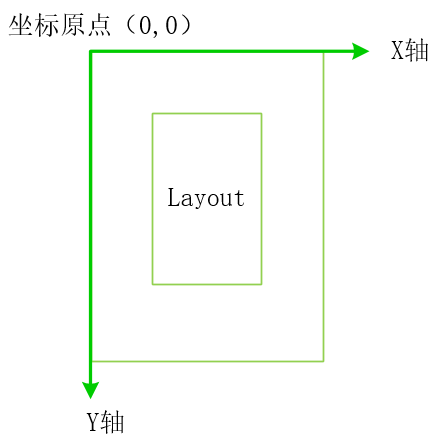

一 CSS显示模式
1，标签级别
CSS将HTML标签做了分类：文本级，容器级。
文本级标签只能嵌套文字，图片等信息。常用的文本级标签包含：span，p，em，img等。
容器级标签可以嵌套其他所有标签。常用的包含：div，ul，ol，table等所有结构化语义标签都是容器级，比如header，footer，nav，section等。
2，元素分类
CSS将所有HTML元素分为三大类：块级元素，行类元素，行内块级元素。
块级元素：独占一行；如果没有设置宽度，将继承父元素的宽度；如果设置了宽高，将按照设置值显示。
行内元素：在一行内共存。不能设置宽高（margin和padding依然可以使用）。默认按内容大小显示。
行内块级：不会独占一行，但可以设置宽高。
CSS对元素的这种分类，我们称之为显示模式。
3，显示模式转换
CSS使用display属性设置元素的显示模式。display属性有3个值：inline（行内），block（块级），inline-block（行内块级）。
二 CSS选择器
1，常用选择器
a)，通配符
CSS使用(*)星号表示通配符选择器，选中所所有标签。
1 *{font-size:14px;}b)，特别重要
CSS可以在属性值后添加!important强调该属性，该属性一定会被应用到HTML元素上，不管是否还设置了其他样式。
1 p{color:red !important;}c)，标签选择器
直接使用HTML标签名作为选择器。
1 p{}/*选中所有p元素*/d)，类选择器
CSS使用(.)点表示类选择器。
1 .wrap{}/*选中所有class为wrap的元素*/e)，id选择器
CSS使用(#)井号表示id选择器。
1 #firstname{}/*选中id为firstname的元素*/f)，后代选择器
CSS使用( )空格表示后代选择器，左边表示父元素，右边表示后代元素。
1 div p{}/*选中div中的所有后代p*/g)，子选择器
CSS使用(>)大于表示自选择器，左边表示父元素，右边表示儿子元素。
1 div>p{}/*选中div中的所有儿子p*/h)，兄弟选择器
CSS使用(+)加号表示兄弟选择器。
1 div+p{}/*选中紧接在div之后的兄弟p元素*/i)，属性选择器
CSS使用([])表示属性选择器。
1 input[name]/*选中所有带有name属性的元素。*/
2 input[name='ren']/*选中所有name属性值为ren的元素。*/j)，并列选择器
上面的选择器直接连在一起，不适用任何符号隔开，即是CSS中的并列选择器。
1 div.wrap{}/*选中calss为wrap的p元素。*/h)，组选择器
上面的选择器使用逗号隔开，即是CSS中的组选择器。
1 p,.wrap,div,#firstname{}/*同时选中p、class为wrap、div、id为firstname的元素。*/i)，伪类选择器
伪类选择器的形式是：普通选择器+冒号+关键字，伪类用于修饰普通选择器，常用来设置普通选择器选中元素的特殊状态。
1 div:hover{}/*d用于设置div被鼠标滑过时的样式。*/
2 p:first-child{}/*选中在兄弟元素中作为第一个元素的p元素。*/CSS还有很多其他的伪类选择器，详情请参考：https://developer.mozilla.org/zh-CN/docs/Web/CSS/Pseudo-classes。
j)，伪元素选择器
伪元素选择器的形式和伪类相似，不同点在于，它使用双冒号连接关键字。伪元素用来对普通选择器选中的元素的特殊部分单独设置样式。它会把该元素的一部分当做一个完整的元素看待，从而为其设置单独的样式。
1 p::first-line{}/*选中所有p元素的第一行文本。*/
2 p::before{}/*创建一个元素作为p的第一个子元素，该元素默认是行内元素，可以使用content属性添加内容。*/更多伪元素请参考：https://developer.mozilla.org/zh-CN/docs/Web/CSS/Pseudo-elements。
虽然W3C规范要求使用双冒号来表示伪元素，但大多数浏览器依然支持使用单冒号表示伪元素，为了不产生混淆，推荐大家使用双冒号，加以区分。
2，CSS选择器权重
！important：infinity。
内联样式：1000。
id选择器：100。
class||属性||伪类：10。
标签：1。
通配符：0。
请注意：权重值不是十进制数，很可能是256进制的。这意味着即使你使用11个calss属性选中一个元素，它的优先级还是不及一个id选择器。
通常，我们并不需要通过权重计算来判断css选择器的优先级，按照以下方式就可以简单快速的判断：
！important > 内联样式 > id > （class || 属性选择器）> 标签 >通配符。
只有在使用并列选择器时，才需要计算权重值来判定优先级，如果权重值一样，那么就按照谁写在后面谁优先级高的原则。
三 CSS属性
1，文本类属性
文本样式类：
| 常用属性 | 含义 | 可选值 |
| font-style | 字体样式 | italic(斜体)，normal(正常的,默认值） |
| font-size | 字体尺寸 | 所有css支持的 |
| font-family | 字体类型 | 各种字体名称 |
| font-weight | 字体粗细 | normal，100-900，bold(粗)，bolder(更粗)，lighter(细) |
| text-decoration | 文本装饰 | none(无)，underline(下划线)，overline(上划线)，line-through(删除线) |
| color | 文本颜色 | grb值，16进制值，单词 |
| text-shadow | 文本阴影 | 需要四个值：1，水平偏移量；2，垂直偏移量；3，模糊半径（0表示无阴影）；4，影音颜色 |
| text-transform | 文本转换 | none(不转换)，uppercase(转换为大写)，lowercase(转换为小写)，capitalize(首字母转换为大写)，full-width(转换为全角) |
文本布局类：
| 常用属性 | 含义 | 可选值 |
| text-align | 文本对齐方式 | left(左对齐)，right(右对齐)，center(居中) |
| line-height | 行高 | 所有css支持的 |
| letter-spacing | 字间距 | 所有css支持的 |
| word-spacing | 单词间距 | 所有css支持的 |
| text-indent | 首行缩进量 | 所有css支持的 |
| text-overflow | 溢出处理 | clip(不显示截断内容,默认值），ellipsis(以省略号显示被截断内容，需要配合white-space：nowrap使用才有效) |
| white-space | 空白和换行处理 | normal(合并,可换行)，nowrap(合并，不换行)，pre(保留) |
2，盒子类属性
display：设置盒子是否显示。
1 div{
2 display:none;/*完全隐藏，不占用空间*/
3 /*display:block;块级元素*/
4 /*display:inline;行内元素*/
5 /*display:inline-block;行内块级*/
6 }content：width和height，分别定义盒子内容区域的宽高。
1 p{
2 width:200px;
3 height:200px;
4 }padding：环绕在content区域之外的就是内边距（或者叫填充）。
1 p{
2 padding-top:10px;
3 padding-right:20px;
4 padding-bottom:30px;
5 padding-left:40px;
6 /*padding:10px 20px 30px 40px;简写方式，顺时针方向*/
7 /*padding:20px; 如果四周padding值相同，可这样简写*/
8 }border：环绕在padding和content区域之外的即是边框。
1 p{
2 border-width:5px;/*边框宽度*/
3 border-style:solid;/*边框类型，solid实线，dotted圆点虚线，dashed虚线*/
4 border-color:black;/*边框颜色*/
5 /*border:5px solid black;简写方式*/
6 /*单独设置某个方向边框的方式与padding类似*/
7 /*border-top-color:red;也可以通过该方式单独设置某一边的单个属性*/
8 border-radius:5px;/*四角的圆角*/
9 /*圆角也是一个复合属性，你可以单独设置某一个，例如左上角的圆角：border-top-left-radius*/
10 }margin：元素最外层的包裹层就是margin区域。使用时请注意margin的折叠问题（塌陷），前一篇《CSS概述》中有详细介绍。
1 p{
2 margin:10px 20px 30px 40px;
3 /*margin设置方式同padding*/
4 } 事实上CSS有两种盒子模型：标准盒模型，怪异盒模型。你可以使用box-sizing设置CSS以哪种模式解析元素。
1 div{
2 box-sizing:content-box;/*默认值,标准模型*/
3 /*box-sizing:border-box;怪异模型*/
4 }他们的唯一区别是：标准盒模型解析width，height属性为内容区域的宽高，怪异模型则解析为content+padding+border区域。
3，内容溢出
我们已经知道，CSS将所有元素解析为一个个盒子，并可以通过设置width和height属性规定盒子内容区的大小。那么，当内容过多，盒子大小不足以容纳这么多内容时，CSS是怎么处理的呢？实际上，CSS为了避免数据丢失（用户无法查看所有内容），会在超出设置的范围之外显示剩余内容，进而可能影响到其他元素的显示，这种现象我们称之为内容溢出。
一般有两种情况会导致内容溢出，一种是子元素的尺寸大于父元素的尺寸，另一种是文本超出行内块级元素的尺寸。你可以通过设置父元素的overflow属性来控制CSS如何处理溢出的情况。
1 div{
2 overflow:hidden;/*隐藏超出部分*/
3 /*overflow:scroll;显示滚动条*/
4 /*overflow:scroll-x/scroll-y;仅上下或左右方向有滚动条*/
5 /*overflow:auto;一般交给浏览器决定*/
6 }
四 背景
1,颜色
背景是修饰HTML常用的方式，CSS中使用background属性设置背景属性。
1 p{
2 backrgound-color:orange;/*背景颜色*/
3 }
2，图片
除了可以设置背景颜色外，CSS还可以设置背景图片。
1 p{
2 backrgound-img:url('url');/*背景图片*/
3 background-repeat:no-repeat;/*不平铺(重复)*/
4 /*该属性还有几个可选值：repeat：水平垂直都平铺（默认值）；repeat-x：只在x轴平铺；repeat-y：只在y轴平铺*/
5 }请注意，如果背景图像和颜色都被设置了，一般情况下图像会覆盖颜色。
你还可以通过设置background-size来调整背景图片的尺寸，以适应网页的需要。
1 p{
2 background-size:100px 200px;/*指定具体尺寸*/
3 /*如果你不知道具体尺寸，那么你可以使用关键字，让浏览器帮你设置大小。
4 cover：保证图片的宽高比，放大图片以填满整个区域，可能导致图片部分内容溢出。
5 contain：保证图片不溢出，尽量填满整个区域，可能导致部分区域无法被图像覆盖。*/
6 }
3，定位
在图像不需要填满整个区域的时候，你可以使用background-position来定位图片，让其显示在你想要的位置，需要配合background-repeat:no-repeat使用。
在学习如何定位之前，我们应该先了解一下CSS中的坐标系：

坐标原点即盒子的左顶点，水平向右为x轴正方向，垂直向下为y轴正方向。
1 p{
2 background-img:url('url');
3 backrgound-repeat:no-repeat;
4 background-position:50px 50px;/*设置水平和垂直偏移量*/
5 }偏移量可以是正值，也可以是负值，单位可以使px，百分比，em等。
4，关联
通常，如果我们设置了背景图片，且网页内容较多，出现滚动条时，当我们滑动滚动条，背景图片也会随着网页一起滚动。如果你想让背景图片固定不动，即使滑动滚动条，也只是内容上下或左右移动，那么你可以通过设置背景与滚动条的关联方式来达到目的。
1 div{
2 background-img:url('url');
3 background-attachment:fixed;
4 /*另一个取值scroll是该属性的默认值，即图片随滚动条一起滚动*/
5 }
5，简写
如果你想一次设置多个背景相关的属性，其实你大可不必像上面那样。上面介绍的背景相关属性可以简写为：
1 /*background:颜色 图片 平铺方式 关联方式 定位方式*/
2 div{
3 background:red url('url') no-repeat attachment relative;
4 }
6，渐变
你一定在网页上见过渐变色，它是那么的炫酷，现在，你也可以通过css定义自己的渐变色了。
使用linear-gradient()函数创建线性渐变。
函数需要3个或多个参数，第一个表示渐变方向（可以是关键字或角度deg），第二个表示开始颜色，第三个表示结束颜色，如果在后面添加了更多的颜色，那么这些颜色都会在渐变过程中出现。
1 p{
2 background:linear-gradient(to right,red,blue);
3 /*创建一个从左到右的，从红色到蓝色的渐变*/
4 }
5 p{
6 background:linear-gradient(to bottom right,red,blue);
7 /*创建一个从左上角到右下角的，从红色到蓝色的渐变*/
8 }使用radial-gradient()函数创建径向渐变。
函数需要3个或多个参数，第一个参数定义渐变的圆点，默认值为center，即元素的中心点，你也可以通过具体尺寸或关键字（top，right，bottom，left，center或他们的组合）指定其位置；第二个参数定义径向渐变的形状（circle(圆)，ellipse(椭圆，默认值)）和大小。然后是起止颜色，同线性渐变。你也可以给每个颜色后面添加一个百分比（用空格隔开），表示该颜色在整个渐变区域中的占比。
1 p{
2 background:radial-gradient(top center,circle,orange 70%,purple 30%);
3 /*定义一个以盒子上边缘中间点为圆点，橘色占70%，紫色占30%的圆形径向渐变。*/
4 }由于渐变在CSS3才被引入，所有现在各大浏览器对它的支持各不相同，并且语法也与标准语法有一定出入，在使用时请一定作重考虑他们的兼容性问题。更多渐变知识请参考https://developer.mozilla.org/zh-CN/docs/Web/Guide/CSS/Using_CSS_gradients。